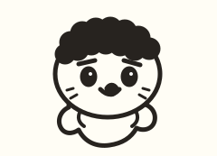

ちいかわ検定
セイレーン編・全5問
難易度：だんだん鬼
人魚の島のひみつ
セイレーン編クイズ
最初はウォーミングアップ。後半は伏線や物語の核心まで出題します。5問すべて正解で「ちいかわマスター」！

5問だけだよ？ まさか緊張してるの？
⚠️ 原作・映画「人魚の島のひみつ／セイレーン編」の重要なネタバレを含みます。
最初はウォーミングアップ。後半は伏線や物語の核心まで出題します。5問すべて正解で「ちいかわマスター」！
